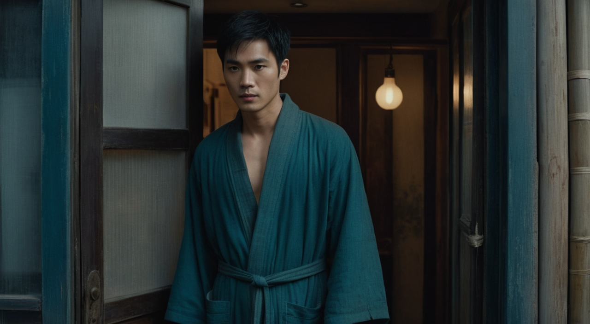
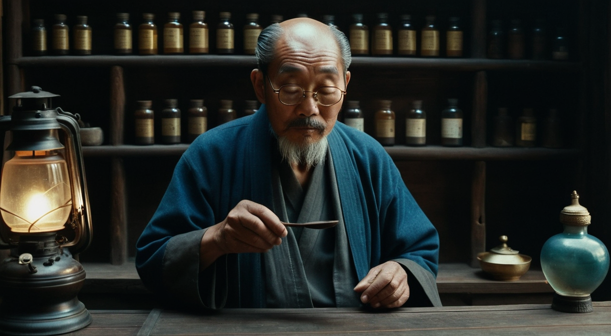
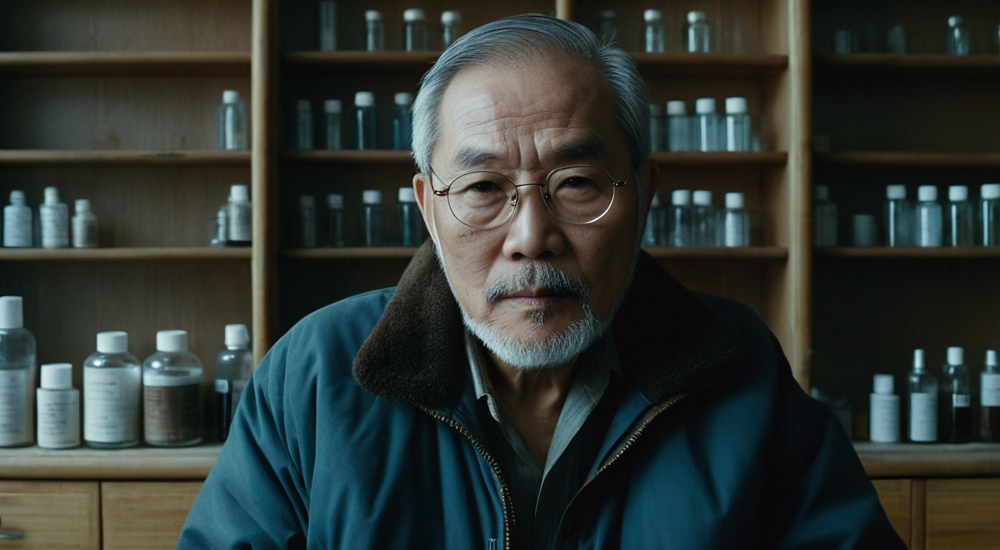
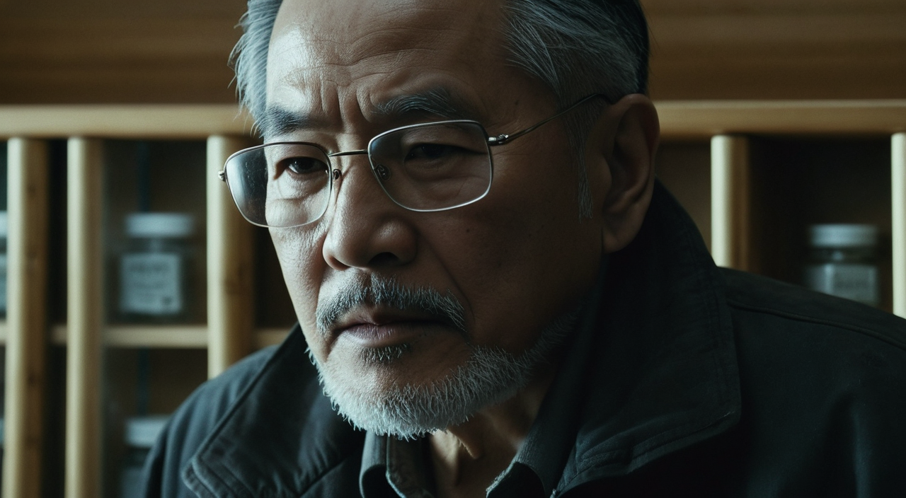
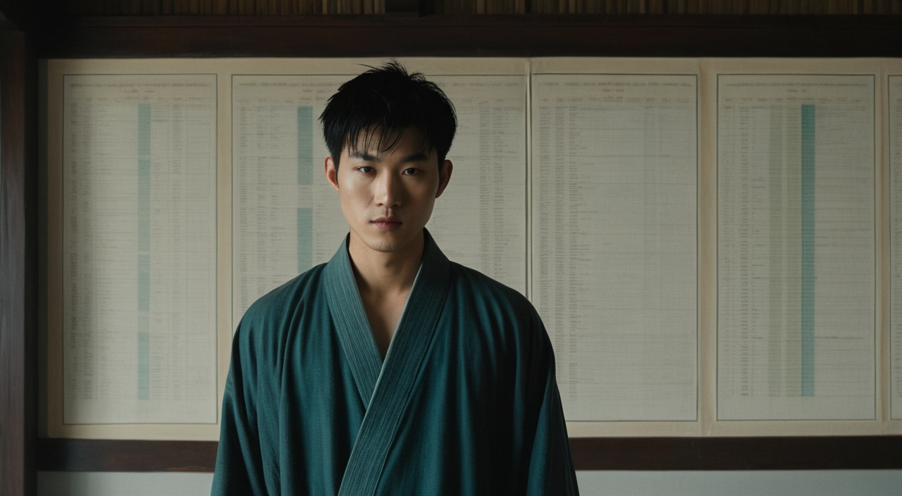

一条把小说文本自动变成带配音短剧的端到端管线：输入一段网文，输出分镜关键帧、由图生视频驱动的运镜、中文字幕与 AI 旁白，最终合成为一支完整短片。
七个环节全部本地跑通，每一步都对应仓库里的具体代码。
这是整个项目最核心的一个工程决策。
需求是「先出关键帧再图生视频」，理想形态是首帧 + 尾帧双关键帧共同约束一段运动。但本地的 Wan2.2-TI2V-5B 是首帧单向模型——它只能以第一张图做条件，无法条件化尾帧（真正的双关键帧需要独立的 FLF2V 模型，本机未安装）。
因此采用组合方案：首帧驱动真实运动 + ffmpeg 淡入尾帧落地。既拿到图生视频的真实动态，又保证每一幕精确收在预想构图上。
首帧 PNG ──▶ Wan2.2-TI2V-5B i2v ──▶ 真实运动片段 ──▶ ffmpeg xfade 0.8s ──▶ 落在尾帧 PNG
▲
尾帧 PNG（作为收束目标）
--lowvram 机器上，如果出图或 i2v 任务被排在别的 GPU 任务之后，600s 内轮不到就会超时；更糟的是客户端放弃后，ComfyUI 里的任务并不会真的死掉，会持续占满 GPU 让后续所有渲染静默降级成静态推拉。解法是：提交前先等队列清空，发现孤儿任务立刻 POST /interrupt。
四幕，全部真实图生视频 + 尾帧落地 + StepFun 儒雅男声旁白。
成片 31.25 秒 · h264 + aac 44.1kHz · 四幕均为真实 i2v 运镜
暮色四合，江南小镇的青石板路被雨水浸得发亮。

掌柜的是个花甲老者，戴一副水晶老花镜，正借着油灯捻须研墨。

老者终于抬起头，镜片后的目光陡然锐利如刀。


窗外惊雷炸响，照亮墙上一幅泛黄医图——图中人影竟与叶玄机有七分相似。

新素材《白璃 / 叶修 / 羲和 vs 司马谷岩》打斗片段，两幕，男声热血旁白。
成片 19.13 秒 · h264 + aac 44.1kHz · 101 紧张 / 102 热血
司马谷岩逼近羲和，口出轻薄之言；叶修暗道：这家伙，真是找死！
羲和出手如电——一掌拍出！砰！司马谷岩如离弦之箭飞出十来米，一排大树被撞断。
这些是可复用的经验，遇到同类环境能直接省下数小时。
| 问题 | 根因 | 解法 |
|---|---|---|
| i2v 全部静默降级成静态推拉 | 超时后客户端放弃，但 ComfyUI 里的任务假死不退，独占 GPU 达 99% | POST /interrupt 清孤儿任务；每批跑前确认队列为空 |
| 双关键帧 VAE 报「expected 12 channels got 3」 | 本地 Wan2.2-TI2V-5B 是首帧单向模型，无 FLF2V 能力 | 改用单首帧 i2v + ffmpeg xfade 尾帧落地 |
| 出图阶段莫名超时 | 任务被排在别的 GPU 任务之后，600s 内未获调度 | 提交前先等待队列清空再提交 |
| 中文字幕叠加失败 | Windows 下 ffmpeg drawtext 的 fontfile=C:/... 冒号无法解析 |
改用 PIL 渲染透明字幕 PNG 再叠加 |
| 配音后画面节奏被拉伸 | 旁白时长大于视频，直接拉长会破坏真实运镜 | tpad=stop_mode=clone 冻结末帧补足时长 |
前置条件：本机 ComfyUI 运行在 8188，模型 RealVisXL V4.0 与 Wan2.2-TI2V-5B 已就位，.env 已配置 StepFun API Key。
# 生成《青囊异闻录》（出图 → i2v → 落地 → 字幕 → 合成） python scripts/novel_video.py # 只跑指定场景 / 只做合成 python scripts/novel_video.py --only 1 4 python scripts/novel_video.py --compose # 为成片接入阶跃星辰配音 python scripts/add_stepfun_tts.py qingnang python scripts/add_stepfun_tts.py fight
| 文件 | 作用 |
|---|---|
scripts/novel_video.py | 直驱主管线脚本，含分镜配置与全部处理函数 |
scripts/novel_fight_demo.py | 新素材打斗片段的分镜与生成 |
scripts/add_stepfun_tts.py | 阶跃星辰配音与音视频合成 |
scripts/complete_fight101.py | 带队列保护的补渲与二次合成 |
engines/wan5b.py | Wan2.2 图生视频引擎，负责工作流组装 |
output/novel_demo_v2/ | 全部产物：关键帧 PNG、各幕成片、最终配音版 |